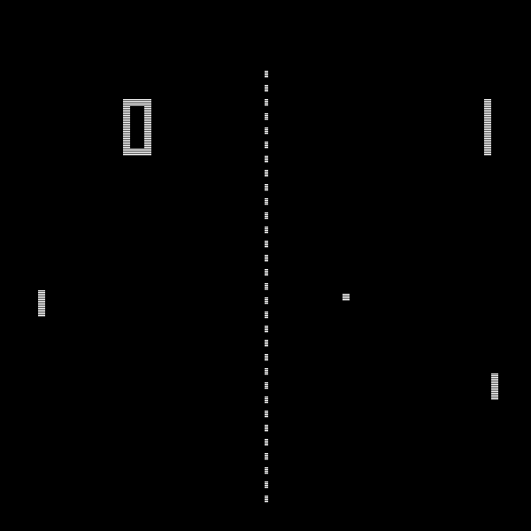
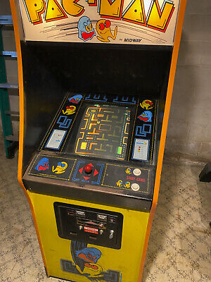
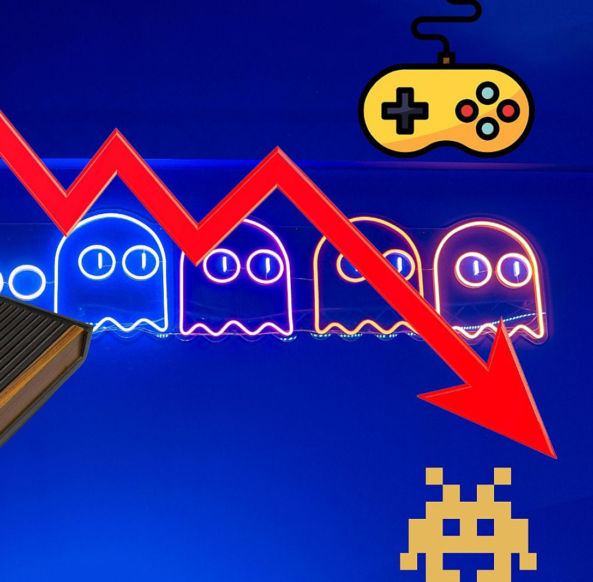
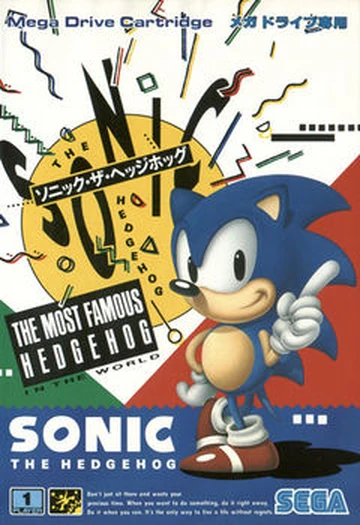
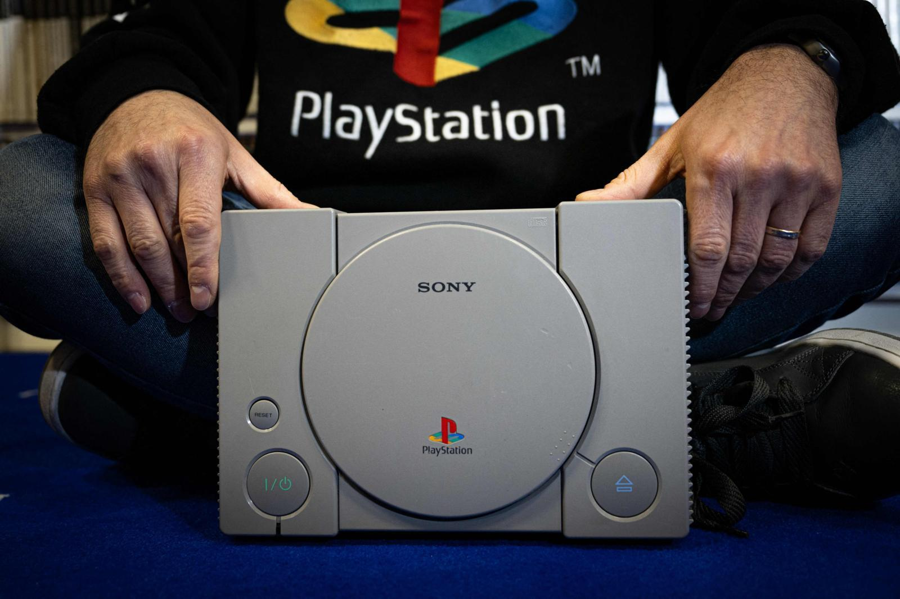
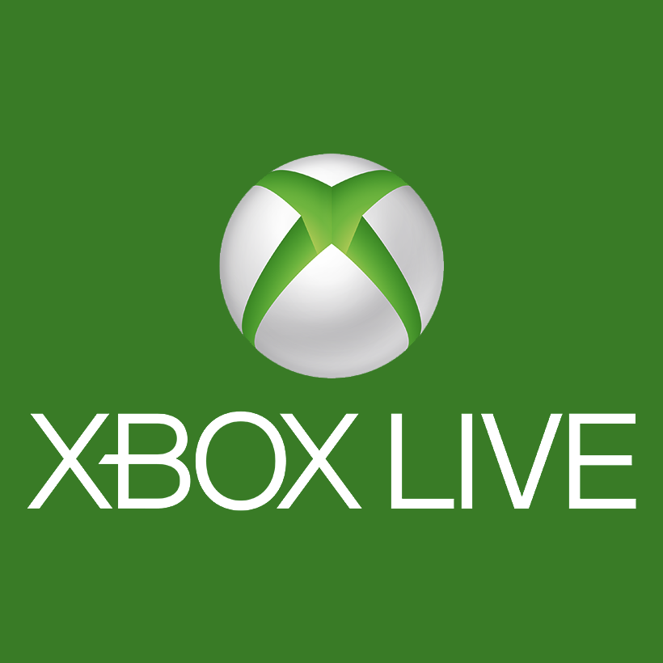
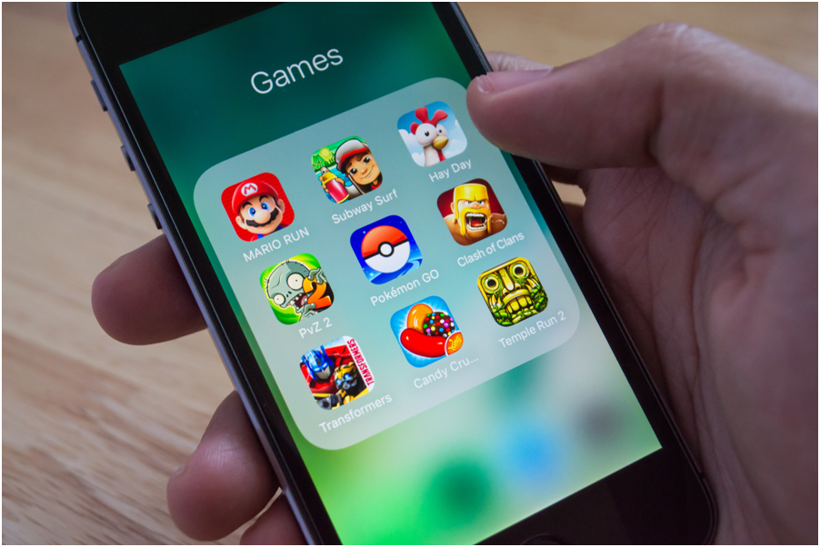
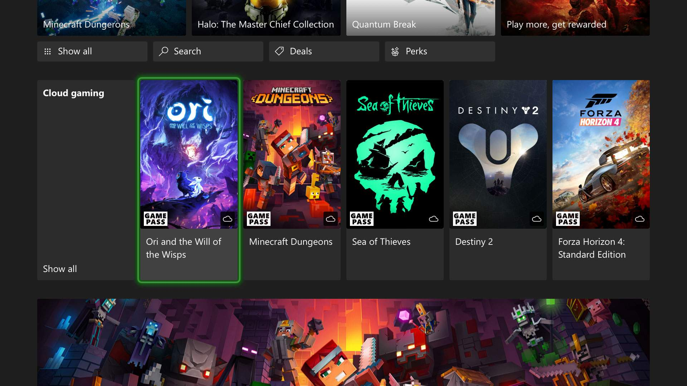

1950
Het onstaan van de eerste games

In de late jaren '50 maakte natuurkundige William Higinbotham het eerste digitale spel, Tennis for Two, een simpele tennis-simulatie op een oscilloscoop.
→
1962
Spacewar

Spacewar! werd gemaakt door Steve Russell en MIT-studenten. Het wordt gezien als een van de eerste echte videogames en verspreidde zich snel naar andere universiteiten en laboratoria.
→
1972
Het eerste commerciële arcadegame
Pong, gemaakt door Atari-oprichter Nolan Bushnell, werd gelanceerd als een van de eerste succesvolle commerciële videogames en werd wereldwijd een hit in arcades.
→
1980
Pac-Man
Pac-Man, uitgebracht door Namco, wordt een iconische arcadegame en richt zich opvallend minder op de actiegerichte games van die tijd, met een focus op strategie en puzzel.
→
1983
De videogamecrisis
De videogame-industrie krijgt een crisis door te veel slechte games en de opkomst van homecomputers. Veel bedrijven gaan failliet en de industrie lijkt even stil te staan.
→
1985
De lancering van de NES

Nintendo lanceert de Nintendo Entertainment System. Die redt de industrie en wordt een van de bestverkochte consoles met games zoals Super Mario Bros. en The Legend of Zelda.
→
1991
De lancering van Sonic the Hedgehog
Sonic the Hedgehog wordt gelanceerd door Sega en helpt het bedrijf te concurreren met Nintendo in de 16-bit generatie, terwijl het ook het gezicht van Sega wordt op de gamingmarkt.
→
1994
De introductie van de PlayStation
Sony lanceert de PlayStation, die populair wordt door 3D-graphics en veel third-party ontwikkelaars. Het verandert de ontwikkeling en presentatie van games.
→
2000
Het opkomen van online multiplayer
De lancering van de Xbox en Xbox Live markeert het begin van online multiplayer, waardoor spelers wereldwijd samen of tegen elkaar kunnen spelen.
→
2010
De opkomst van mobiele gaming
x De lancering van smartphones zoals de iPhone en games zoals Angry Birds en Candy Crush maakt mobiele gaming populairder en bereikt een breder publiek.
→
2020
Cloud gaming en streaming
Cloud gaming groeit met platforms zoals Google Stadia, GeForce Now en Xbox Cloud Gaming, waardoor je games kunt spelen zonder krachtige hardware.